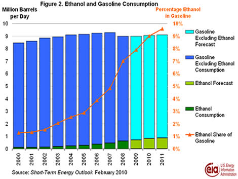
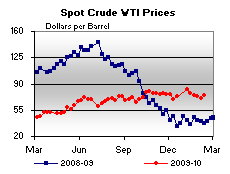

Released on February 18, 2010
(Next Release on February 24, 2010)
U.S. Gasoline Imports: Recent Developments and Outlook
United States’ net imports of gasoline, including net imports of both finished gasoline and blending components, increased significantly over the 1997 to 2007 period, peaking in 2007 at more than 1 million barrels per day, or 11 percent of total U.S. gasoline consumption. Since then, gasoline imports have fallen to an estimated 751 thousand barrels per day in the period from January through November 2009. This decline reflects a decrease in gasoline consumption due to relatively high prices at the pump, the increasing ethanol in U.S. gasoline blends, and the global economic downturn in 2008 and 2009.
With a modest economic recovery accompanied by some growth in gasoline demand, the Energy Information Administration’s (EIA) Short-Term Energy Outlook forecasts that U.S. net imports of gasoline will rise to 804 thousand barrels per day in 2011. However, with U.S. demand for gasoline expected to grow only slowly, many foreign refiners with excess gasoline may need to look for other export markets.
Historically, gasoline imports have been concentrated in the East Coast, which accounted for 86 percent of all U.S. imports of finished gasoline and blending components as recently as November 2009. Most of the additional imports in recent years have come from Europe (Figure 1), which provided 54 percent of U.S. gasoline imports from January through November 2009. Diesel-fueled vehicles make up a growing share of Europe’s light-duty vehicle fleet, accounting for about half of all new vehicle sales since 2004, compared to about 2 percent in the United States (see EIA, “Light-Duty Diesel Vehicles: Efficiency and Emissions Attributes and Market Issues,” Chapter 3) As a result, European refiners focusing on increasing yields of diesel have shipped excess gasoline to other markets, including the United States. Canada and the Virgin Islands are also significant sources of imports, and gasoline export capability is growing in India and the Middle East.
Worldwide growth in demand for ethanol and other biofuels, especially in the United States, also has been displacing some petroleum-based gasoline. In 2011, EIA expects ethanol to account for almost 10 percent of the volume of U.S. gasoline consumed, up from just over 1 percent in 2000 (Figure 2).

U.S. refineries have focused on maximizing gasoline output for decades. However, in 2008, extremely high refining margins for distillate led American refineries to increase their distillate production to 28 percent of total refinery output from an average of 25 percent over the previous 5 years. U.S. refiners exported much of the extra distillate output to meet growing international demand. Over the same period, the gasoline share of U.S. refinery output fell from 47 percent to 44 percent. Although yields shifted back to more typical levels in 2009, EIA expects market conditions, particularly the relatively strong growth of global distillate demand, to favor higher distillate yields in the future.
Both domestic and foreign refiners will continue to compete for gasoline markets, even as they realign their refineries to reduce gasoline output in favor of other products. An excess of global production capacity will likely limit gasoline refining margins for some time to come, but gasoline consumers may benefit for the very same reason.
Prices for Gasoline and Diesel Fuel Continue to Decline
For the fifth consecutive week, the U.S. average price for regular gasoline fell. Settling at $2.61 per gallon, the average dipped more than four cents but was $0.64 above a year ago. Prices were lower in all regions, with the averages on the East Coast, Gulf Coast, and West Coast each dropping about three cents to $2.63, $2.48, and $2.86 per gallon, respectively. The average in the Midwest fell the most of any region, tumbling seven cents to $2.50 per gallon. The smallest drop occurred in the Rocky Mountains where the average slipped about two cents to $2.60 per gallon. The price in California dipped three and a half cents to $2.93 per gallon.
Also dropping for the fifth week in a row, the U.S. average price for diesel fuel slipped a penny to $2.76 per gallon, $0.57 above the price a year ago. Diesel prices fell in all regions of the country. On the East Coast, the average dropped a cent to $2.81 per gallon and the Midwest price fell two cents to $2.71 per gallon. The average fell a penny on the Gulf Coast to $2.72 per gallon. The drop in the Rocky Mountains was the smallest of any region, slipping a half cent to $2.78 per gallon. At $2.85, the average on the West Coast slipped more than a penny, while the price in California dropped two cents to $2.90 per gallon.
Stocks of Propane Continue Descent
Persistent cold weather last week continued to push the Nation's primary supply of propane sharply lower with a weekly stock draw that measured over 2.9 million barrels, leaving U.S. inventories of propane at an estimated 29.6 million barrels. The largest stock decline was in the Gulf Coast region with a 1.8 million barrel draw. The Midwest regional stocks fell 0.8 million, while the East Coast region fell by 0.4 million barrels. The Rocky Mountain/West Coast region was down slightly. Propylene non-fuel use inventories increased their share of total propane/propylene stocks from 8.5 percent to 8.7 percent.
Residential Heating Fuel Prices Remain Constant
Residential heating oil prices increased slightly during the week ending February 15, 2010. The average residential heating oil price rose 0.4 cent per gallon to reach 285.5 cents per gallon, 54.7 cents per gallon higher than the same time last year. Wholesale heating oil prices gained 3.2 cents per gallon to reach 200.8 cents per gallon, 60.3 cents per gallon higher than at this time last year.
The average residential propane price remained unchanged at 268.8 cents per gallon. This was an increase of 37.8 cents per gallon compared to the same period last year. Wholesale propane prices fell 14.1 cents per gallon to reach 138.6 cents per gallon. This was an increase of 54.0 cents per gallon when compared to the February 16, 2009 price of 84.6 cents per gallon.
Text from the previous editions of “This Week In Petroleum” is now accessible through a link at the top right-hand corner of this page.
| Retail Prices (Cents Per Gallon) | |||||||
| Retail Data | Changes From | Retail Data | Changes From | ||||
| 02/15/10 | Week | Year | 02/15/10 | Week | Year | ||
| Gasoline | 260.8 | Heating Oil | 285.5 | ||||
| Diesel Fuel | 275.6 | Propane | 268.8 | ||||
| Spot Prices (Cents Per Gallon*) | |||||||||||||||||||||||||||||||||||
|  | |||||||||||||||||||||||||||||||||||
|
|||||||||||||||||||||||||||||||||||
| *Note: Crude Oil WTI Price in Dollars per Barrel. | |||||||||||||||||||||||||||||||||||
| Stocks (Million Barrels) | |||||||
 |
|||||||
| Stocks Data | Changes From | Stocks Data | Changes From | ||||
| 02/12/10 | Week | Year | 02/12/10 | Week | Year | ||
| Crude Oil | 334.5 | Distillate | 153.3 | ||||
| Gasoline | 232.1 | Propane | 29.642 | ||||